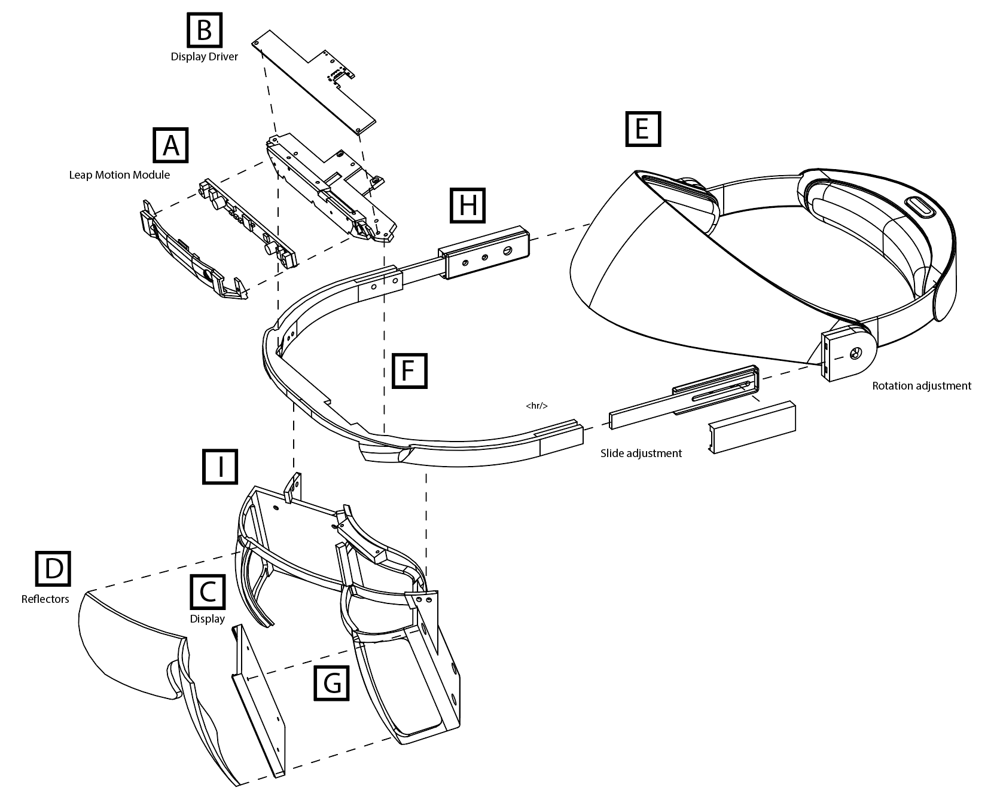
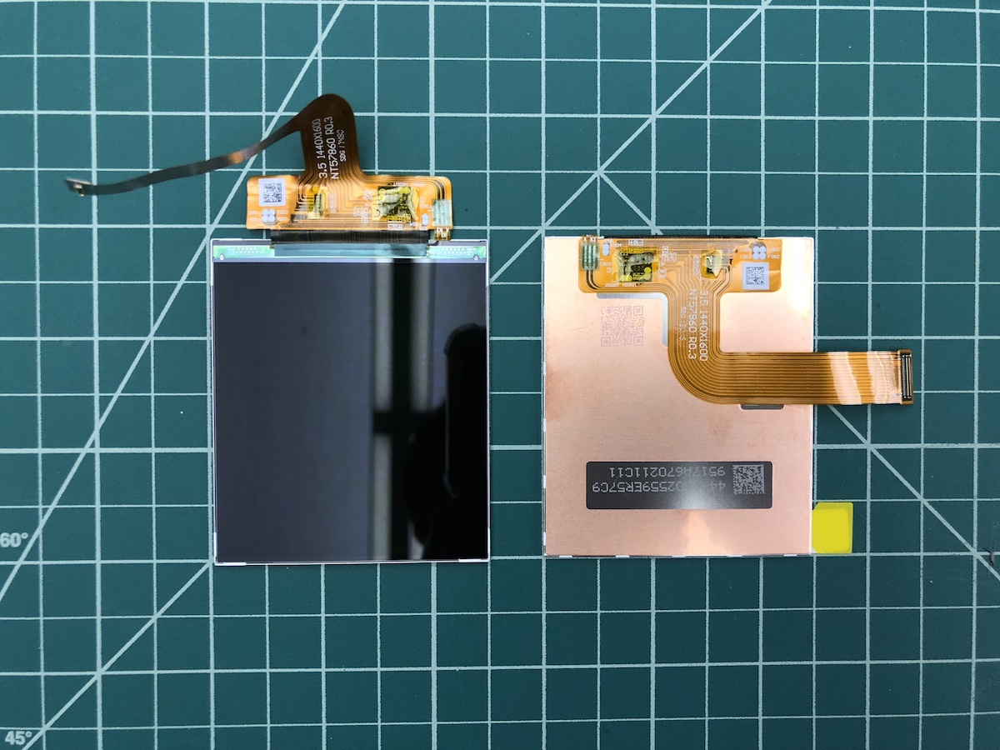
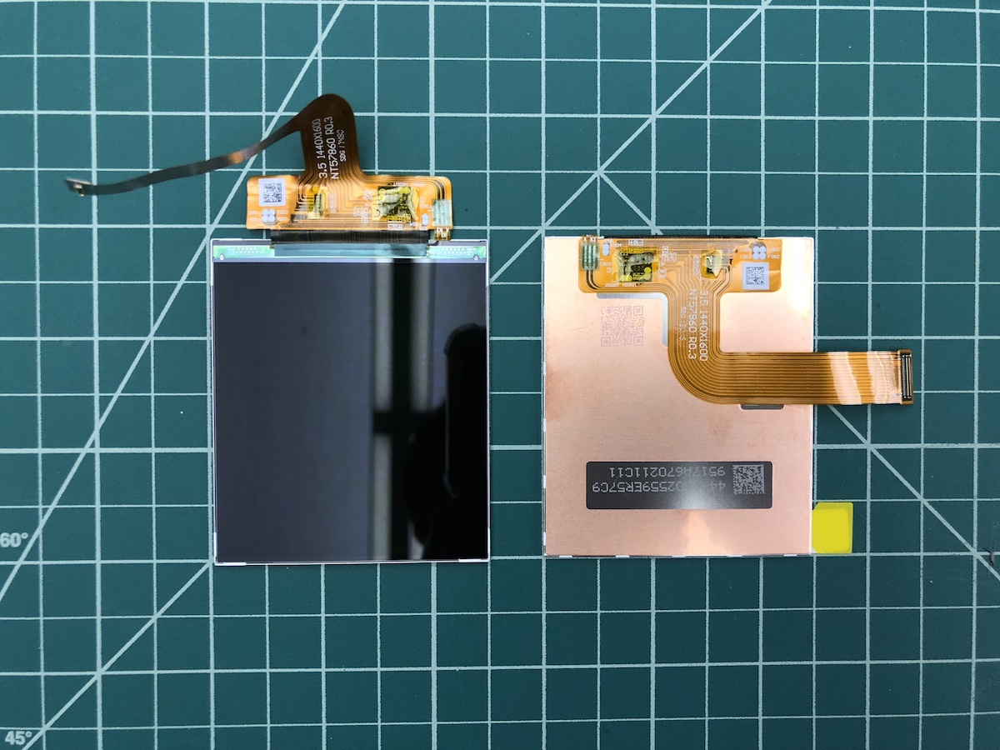

Northstar Release 1
The following pages contain the original documentation for the first release of Project Northstar, the latest release is here: Northstar 3.1
Initial Release Assembly Guide
Warning
This Assembly Guide is for Release 1 of the headset, for the most recent release click here
The purpose of this guide is to instruct, with access to a few common tools, how to make a Project North Star reference AR headset. It's aimed to be accessible and inexpensive to build, using as many off-the-shelf components and 3D-printed parts as possible. For now, several key components are custom-made (e.g. the reflectors, display driver board, and our custom ultra-wide hand tracking module), but we know that together we can find make some work-arounds and alternatives.
Although not a complete AR solution, Project North Star points to a future where the physical and virtual worlds blend together into a single magical experience. With it we hope to gather like-minded people and build that future together.
Overview
The headset is made up of three modular assemblies: the optics bracket, the headgear with hinges, and the halo (which contains all the electronics). This configuration has been very useful as we iterated on different parts. The parts are 3D printed using consumer grade 3D printers and materials, with a couple parts from McMaster-Carr. The goal is to have an easily reproduced AR headset that anyone can put together.
Ignoring the reflectors, you'll need to 3D print roughly 20+ hours of parts and cut, drill and tap aluminum bar stock. Nothing expensive or major requiring a machine shop, but a few tools are expected. Read below for the list.
Note
We are exploring different possibilities for individuals to obtain reflectors.
Download 3D CAD files
Warning
These parts and this guide are still a work in progress_
Tools & Materials
- 3D printer and software: MakerGear M2, Simplify3D, print profiles: Rsilver's M2 Simplify 3D optimized profiles, Thingiverse
- Filament: eSun PLA+, Amazon
- T6 Torx driver for thin-plastic screws Torx T6 driver, McMaster
- Phillips driver for M2.5 screws Screwdriver Phillips #1 size, Amazon
- M2.5 Screw thread tap *: M2.5 x 0.45 mm Thread Tap, McMaster
- Hot glue gun (on low setting < 40W), for reflectors Hot glue gun, Amazon
- Latex or Nitrile gloves (minimize fingerprints on optical components) Sterile gloves, Amazon
- Optional: These are our favorite 3D print finishing tools (wire cutters, chisel, file, sand paper, hand drill, etc.)
BOM

| BOM Ref. | Part Name | Quantity | Procurement |
|---|---|---|---|
| A | Leap Motion Controller | 1 | 1 |
| B | Display Driver | 1 | TBD |
| C | 3.5-inch 120Hz LCDs | 2 | TBD |
| D | Acrylic reflectors | 2 | 1 |
| E | Headgear | 1 | 1 or 2 |
| F | Self-tapping screws for plastic | 1 pk | 1 |
| G | Machine screws M2.5 x 6mm | 1 pk | 1 |
| H | Hinge fasteners, #10-32 | 1 pk ea. | 1 and 1 |
| I | Al. bar stock 10x3mm | 12-in [300 mm] | 1 |
| J | 3D printed parts | - | DIY |
A: Leap Motion Controller
Depending on which Leap Motion hand tracking module you use, it will determine which sets of 3D prints you'll need. Check the 3D printing section for more details.
Retail Leap Motion Controller - Amazon
-or-
Custom ultra-wide tracking module
B: Leap Motion display driver
See the Electronics folder in the main repo for display driver schematics and firmware.
C: BOE 3.5-inch 120Hz LCDs VS035ZSM-NW0 - 3.5inch LTPS 1440*1600 Module
{% hint style="info]() BOE produces 3.5-inch 1440*1600 modules and refers to them as VS035ZSM-NW0; however they are not listed publicly because they are only sold in large quantities. The panel listed as VS035ZSM-NH0 is no longer in production nor have we tested it with our driver board. On a broad level, it is possible to make the hardware more accessible through bulk orders of the core components, which is currently under exploration. {% endhint %}
 

D: Reflectors (aka combiners, lenses)
What may seem intimidating at first is conceptually very simple. One property of elipsoids is that all the light emitted from one focus reflects off its surface and focuses it to the second focus! Amazing. Therefore, to figure out the section of elipsoid needed in our AR application, we traced a ray backwards from the second focus, through a cellphone-sized.
The resultant elipsoid is defined by the following dimensions, chosen to allow a range of 3-to-5-inch LCD panels to be placed near the eye. The perimeter of the elipsoid section was decided on empirically by minimizing distortion with a larger prototype, then cropping to the reflected image. This large reflector was roughly 120x120mm, and the final ended up being around 75x75mm.


The reflectors are diamond-turned and milled from PMMA (a.k.a. acrylic). The outside surface needs an anti-reflective coating to prevent a secondary reflection from degrading the image. Indoors and subjectively, 50-50% (transmissive-reflective) anti-reflective coating provided the best results for us.

From the elipsoid definition, the reflectors need to be rotated and translated into position. We define the origin point as the midpoint between the two reflector foci, which should line up with the user's pupils:


E: OEM Headgear replacement
Light and adjustable with rigid mount points. Several welder's mask headgear vendors were tested, but most failed to be rigid or comfortable for our applications. Their general design is made of injection-molded plastic features that tighten onto either side of a welding faceshield. Although it may be desireable for those features to be flexible and compliant for welding, our heavier AR assemblies caused the headgear to flex and/or dig into the users' head. Ouch. The following Miller branded model's had very little flex and generally comfortable. It really helps they're lightweight as well.
These two specific generations of headgears yielded the best results quickly, mounting evolving electronics on the most varied heads. The amount of adjustment points makes it work for the large majority of users.
Welding Replacement Headgear - Miller Generation IV for T94 Headgear, Amazon Part #260486 or Miller Replacement Headgear, Amazon Part #256174


Alternative:
The 3M Speedglas Utility headgear was the first headgear we used for North Star prototypes. At the time, the optics would bounce around, causing the reflected image to shake wildly as we moved around. We minimized this by switching to the stiffer Miller headgear and continued other improvements for several months. However, the 3M headgear was sorely missed, as it was simple to put-on and less intimidating for demos. Since then we added cheek alignment features, which solved the image bounce, and therefore makes sense to bring back this design as a supplement to the release headgear. The headgear and optics are interchangeable, only the hinges need to match the headgear.
Welding Replacement Headgear - 3M Speedglas Welding Helmet Headband, Amazon


F: [Qty: 6] Delta PT screws M2.0 x 6 mm Long "Thread-Forming Screws for Thin Plastic" - McMaster #96817a209

G: [Qty:12] M2.5 x 0.45 mm Thread, 6 mm Long "Steel Pan Head Phillips Screw" - McMaster #92005a066

H: [Qty:2 pairs] Hinge rotation fasteners
Machine screws, 10-32 Thread Size, 7/8" Long "Steel Button Head Hex Drive Screw" - McMaster #92949a270
Matching nuts, 10-32 Thread Size, Stainless "Steel Nylon-Insert Locknut" - McMaster #91831a411


I: [Qty:2] 3x10mm Al. bar stock cut to approximately 150mm length McMaster #92005a066

Cut, drill, and tap the slides to roughly 150mm (6 inches) in length. We used a Dremel rotary tool to cut the bar stock to length, and transferred the hole pattern from the Halo 3D print using a transfer punch. The two holes are tapped using M2.5 x 0.45 mm Thread Tap, McMaster
Cost and speed being the most important design parameters, this DIY method performs as well as a machined part at 100x lower price. Without access to a CNC metal workshop it's surprisingly expensive to have 1-2 parts machined.


J: 3D Printed Parts
Each component has suggested orientation and print settings for the best performance and least print time. Proceed to the 3D print section for information on each print: 3D Printing Part Reference
Assembly Steps
The NorthStar headset has three main sub-assemblies: the optics bracket, the electronics tray, and the adjustable headgear.
Miller headgear
(see below for alternate headgear with torsion hinge)
1) Verify the aluminum bar stock slides without resistance inside the 3D printed hinges. Tip: Repeatedly sliding the bar stock quickly through a new hinge clears out any obtrusive burs, and the heat generated shapes the plastic.
2) Disassemble old hinges from headgear, set aside the o-rings:


3) Assemble new hinge as shown below, using screw/nut H. Tighten until the o-ring is still visible and the hinge has considerable resistance turning.
4) Slide hinge onto headgear, aligning with front of track. Lock in place using screw F


Alternate: 3M Speedglas headgear
1) Remove the mounting assemblies on both sides of the headgear, enlarge hole to 18mm. We used a stepped drill to enlarge the hole, a little larger than the diameter of the spring we’re using.
2) Place matching spring into rear housing, fasten close, and trim spring legs.


3) Place the outer hinge housing onto the spring, in the orientation shown. Using the perimeter fasteners, clamp down onto the spring leg, aligning it with the cutout.
4) Fasten the large center locknut and screw, adjusting it for the desired resistance. Trim the remaining spring leg.


Electronics Tray
5) Fasten display driver B to 3D printed bracket using F screws x 3. Fasten hand tracking module A to 3D print using screws from its enclosure


6) Place USB cable into USB strain relief, and fasten using F screws x 2 to electronics tray
7) Adjust USB cable until the flex connector is aligned with connector and doesn't strain


Optics Bracket
8) Fasten electronics tray to halo using 2 screws F
9) Fasten optics bracket to the halo using 6 screws F

10) Fasten displays and facial interfaces into optics bracket using 4 screws per side G (8 total).
11) Carefully connect the display flex connector to the driver board


12) Fasten lid to halo using 4 screws F from the bottom as shown
13) Secure wires to lid using cable-ties through the anchors


14) Verify reflectors align with tabs in optics bracket, scrape away offending plastic if not. Using hot-glue, "tack" the reflectors into the halo bracket. Be careful not to use too much and be quick enough that the glue doesn't solidify before the reflectors are in place.

Final Assembly
15) Fasten slides to assembled optics bracket using 4 x G screws

16) Make adjustments for user's head.
Notes
{% hint style="info]() Not optimal for users with glasses {% endhint %}
{% hint style="info]() Electronics bracket hard to access/service once installed {% endhint %}
{% hint style="info]() No wire management for display flex connectors {% endhint %}
{% hint style="info]() Imbalanced weight due to cables: USB, display port, and power {% endhint %}